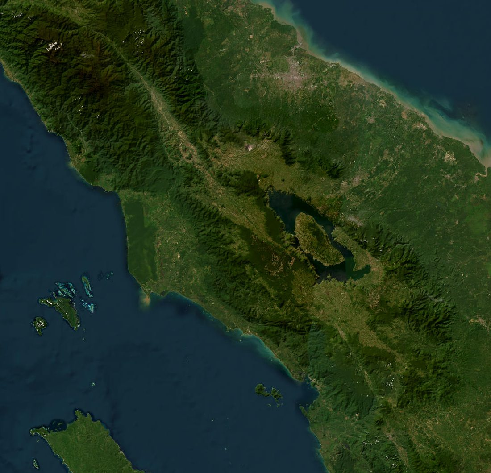
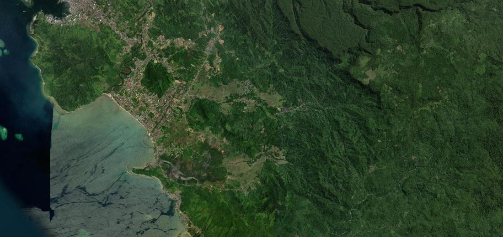

| Titik | Koordinat | Di titik | Jarak tempuh | Waktu terbang | |
|---|---|---|---|---|---|
| B | WIMK Lanud Soewondo | 3.5589, 98.6719 | – | 0 km | +0 mnt |
| 1 | T1 Subulussalam | 2.7949, 97.8966 | 0 mnt | 121 km | +36 mnt |
| 2 | T2 Sipange, Tukka | 1.6682, 98.8676 | 0 mnt | 286 km | +86 mnt |
| 3 | T3 Bona Lumban, Tukka | 1.6954, 98.8619 | 0 mnt | 289 km | +87 mnt |
| B | WIMK Lanud Soewondo | 3.5589, 98.6719 | – | 498 km | +149 mnt |
Jarak dan waktu kumulatif sejak lepas landas, waktu di titik tidak termasuk.

| Leg | Dari ke | Koordinat tujuan (DMS) | Google Maps | Haluan sejati | Jarak | NM | Waktu |
|---|---|---|---|---|---|---|---|
| 1 | WIMK ke T1 | N 02° 47' 42" E 097° 53' 48" | 2.7949, 97.8966 | 225° | 120,9 km | 65,3 NM | 36 mnt |
| 2 | T1 ke T2 | N 01° 40' 06" E 098° 52' 03" | 1.6682, 98.8676 | 139° | 165,3 km | 89,3 NM | 50 mnt |
| 3 | T2 ke T3 | N 01° 41' 43" E 098° 51' 43" | 1.6954, 98.8619 | 348° | 3,1 km | 1,7 NM | 1 mnt |
| 4 | T3 ke WIMK | N 03° 33' 32" E 098° 40' 19" | 3.5589, 98.6719 | 354° | 208,3 km | 112,5 NM | 62 mnt |
| Total | 498 km | 269 NM | 149 mnt |
Waktu leg pada 200 km/jam tanpa angin, belum termasuk waktu di titik. Haluan sejati, belum dikoreksi variasi magnet.
| Sumber | Keterangan |
|---|---|
| zona | pemeriksaan zona belum dibangun (MU-05, MU-07) |
| NOTAM | NOTAM tidak diperiksa |
| daya tahan | tipe tidak dipilih, daya tahan tidak dihitung |
Angka dari NWCG PMS 510 (standar kebakaran hutan Amerika Serikat), bukan standar Indonesia (Q6); mesin tidak menilai lapangan dari citra.